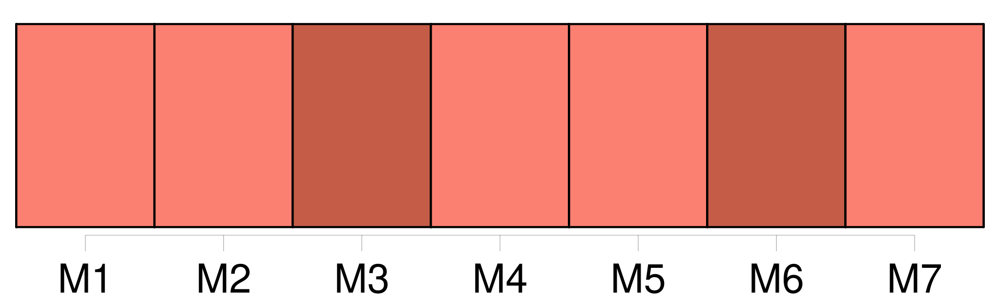
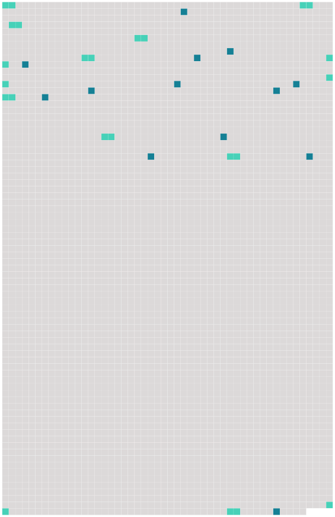

Longueur nb maillons : 25 mentions |
 |
[Chaque partie] prend les mesures nécessaires pour garantir l'application et le respect de la présente convention et de toute mesure de conservation et de gestion adoptée en vertu de celle -ci, y compris l'adoption des lois et règlements nécessaires. [1 phrases]
[Chaque partie] fournit à la Commission toutes les informations nécessaires à la réalisation de l'objectif de la présente convention, y compris les informations statistiques et biologiques et celles relatives à [ses] activités de pêche dans la zone de la convention, et met à disposition de la Commission les informations concernant les actions entreprises pour appliquer les mesures adoptées conformément à la présente convention, lorsque la Commission le requiert et en tant que de besoin, sous réserve des dispositions de l'article XXII de la présente convention et conformément aux règles de procédure élaborées et adoptées par la Commission. [1 phrases]
[Chaque partie] doit, dans les meilleurs délais, par l'intermédiaire du directeur, informer le comité chargé de l'examen de l'application des mesures adoptées par la Commission établi conformément aux dispositions de l'article X de la présente convention : [1 phrases]
[Chaque partie] : [1 phrases]
[Chaque partie] prend des mesures afin de garantir que les navires opérant dans les eaux relevant de [sa] juridiction nationale satisfont à la présente convention et aux mesures adoptées en vertu de celle -ci. [1 phrases] [Chaque partie] , lorsqu' [elle] a des motifs raisonnables de croire qu'un navire battant pavillon d'un autre État se livre à une activité qui compromet l'efficacité des mesures de conservation et de gestion adoptées pour la zone de la convention, attire sur ce point l'attention de l'État du pavillon concerné et peut, le cas échéant, attirer l'attention de la Commission sur ce point. [3 phrases]
[Chaque partie] , à la demande de la Commission ou d'une quelconque autre partie et, lorsque des informations pertinentes selon lesquelles un navire relevant de [sa] juridiction a exercé des activités allant à l'encontre des mesures adoptées conformément à la présente convention [lui] ont été communiquées, doit mener une enquête approfondie et, le cas échéant, agir conformément à [sa] législation nationale et informer, dans les meilleurs délais, la Commission et, s'il y a lieu, l'autre partie, des conclusions de [son] enquête et des actions entreprises. [1 phrases]
[Chaque partie] applique, conformément à [sa] législation nationale et d'une manière compatible avec le droit international, des sanctions d'une gravité suffisante pour garantir efficacement le respect des dispositions de la présente convention et des mesures adoptées en vertu de celle -ci et priver les contrevenants des bénéfices de leurs activités illégales, y compris, le cas échéant, le rejet, la suspension ou le retrait de leur autorisation de pêcher. [6 phrases]
[Chaque partie] , conformément au droit international, prend les mesures nécessaires pour garantir que les navires battant [son] pavillon respectent les dispositions de la présente convention ainsi que les mesures de conservation et de gestion adoptées en vertu de celle -ci, et qu'ils ne se livrent à aucune activité compromettant l'efficacité de ces mesures. [4 phrases]
Outre [ses] obligations susvisées aux paragraphes 1 et 2 du présent article, [chaque partie] prend les mesures nécessaires pour garantir que les navires battant [son] pavillon ne pêchent pas dans les zones relevant de la souveraineté ou de la juridiction nationale d'un autre État de la zone de la convention sans détenir la licence, le permis ou l'autorisation correspondant, délivré par les autorités compétentes de cet État. [85 phrases] [Toute partie] peut se retirer de la présente convention à tout moment au terme de douze ( 12 ) mois à compter de la date à laquelle la présente convention est entrée en vigueur pour [cette partie] , en notifiant par écrit [son] retrait au dépositaire. |
 |
Il est possible de télécharger la ressource sur la page Ortolang |
Si vous avez des questions ou vous voyez des erreurs, merci d'envoyer un mail à silvia.federzoni89@gmail.com |